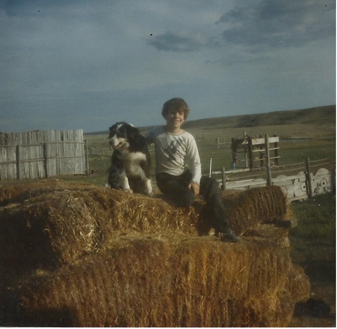
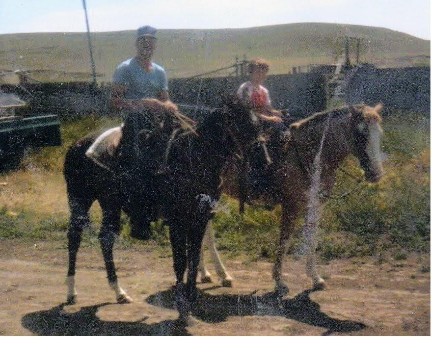

Why I’m Not a Cowboy
June 2023

I remember one of the times from my childhood in Montana when I lived on a small ranch north of a small town on the Blackfeet reservation. My stepdad, Mike, had decided it was time to perform his patriarchal duty and make a man out of me. On that occasion, I was to enjoy the privilege of learning the ‘cowboys always get back on their horse’ lesson, served in conjunction with the ‘drugs are bad’ lesson, which would be waiting for me after a short trip to a pond down at the end of a road.
This lesson is not to be confused with some of the other important life lessons, like: Don’t be in the way or I’ll dangle your child body in mid-air by one arm while I deliver you a swift hard kick in the ass. Don’t swing your feet at the table, or I’ll kick you in the shins with my cowboy boots on, and don’t eat with your elbows or hands on the table or I’ll stab them with a fork. This wasn’t the lesson on castrating piglets or how to properly kick a dog, or a horse, or any animal really. These lessons were supposedly taught more severely in the previous generation, so I couldn’t possibly be having it that badly.
We lived on a ranch, but it was not our ranch. We were ranch hands, but not for the ranch we lived on. I was somewhere between the ages of seven and ten years old, and I was already learning the odd farm chore, like collecting eggs, feeding the animals, poisoning gopher holes, stacking hay bales, and steering the farm trucks in low gear while the men were loading hay. To me, working around itchy-scratchy hay is a more miserable experience than anyone deserves. It makes your eyes water. It sticks to your sweat. It collects in the seams of your clothing and pokes you in all the wrong places. If you try to put gloves on to protect your hands, there will be little bits of straw collected at the ends of each fingertip, so you can enjoy the feeling of being jabbed underneath the fingernails while you grip onto a bale of hay.
It was late-stage ranch life for me, so that means mid to late nineteen-eighties, and it was possibly the same year as the ATV accident. Let’s talk about that for a second. Mike was riding around on a borrowed three-wheeler like an idiot, me hanging on precariously to the back rail so I wouldn’t have to touch him. I was three over-inflated tires and a mounded gopher hole away from being bounced right off and into life in a wheelchair. I did, in fact, sustain an injury after he decided to take a run up a steep hill. After asking me if I was sure I wasn’t a little girl for preferring to walk, he proceeded to speed up the hill with me on the back until the Honda ‘Big Red’ simply refused to defy physics any longer for the sake of his manly bravado. It flipped over and landed right on top of me, cracking my shoulder blade. I was super grateful for the injury in that moment. In fact, I was so elated that I could hardly feel the pain. I knew I was going to head straight to the hospital, after which I would get to stay at grandmas for a week or so.
Now, back to the ‘cowboys always get back on their horse’ lesson. Mike told me the horse I was going to be riding was my new horse. It wasn’t. It was just a horse passing through. It was probably being kept on the ranch because there was no room for it on someone else’s property. We couldn’t even afford a horse for me, and poor people could afford horses back then. Even my grandma Margie, already on social security, could afford to keep at least a few horses on her property. She had acreage and a creek, and she had self-sufficiency of the kind of folks who survived the great depression. For a time, keeping other people’s horses was one of her additional sources of income. If someone in the community decided they wanted to be a cowboy or a barrel racing rodeo-queen, they’d get themselves a pony and need somewhere to put it. They’d pay to keep their horse on grandma’s property, and they would come visit their horse once or twice a year until their dreams faded. They’d sell it down the line and the horse would leave for a new life. I bet most of those horses were rode by my cousins and their friends more often than the original owners.
I think the horse I was riding for my life lesson was one of those kinds of horses. It was very young—‘green’—as they say in cowboy-land, and therefore not used to being ridden, which made it a good opportunity to teach me that cowboys always get back on their horse after they get bucked off. We left the shack we lived in and headed west down the gravel road.
Looking left, we were riding by a reservoir of sulfurous smelling alkaline water, the color of strong coffee, which collected all the runoff from everything in the farm. Algae and cattails were fed by fertilizer and pesticide runoff, along with a few varieties of animal shit. Oil and gasoline from leaky trucks and storage tanks created a rainbow sheen on the surface. If you were to spend too much time enjoying the scenery at the reservoir, you might begin to spot carcasses from unwanted newborn puppies, chucked to their watery grave in a gunnysack by busy humans hardened to the suffering of other creatures. Some kind of greenish gray foamy slime lined the banks, and I couldn’t tell you whether it was alive or if it was simply a product of all the chemical reactions in the reservoir. Livestock had to drink from this reservoir. Ducks and their ducklings swam in it. I may have waded through it once or twice.
On our right-hand side while riding down the road would have been a field that served as a rusty graveyard for old tractors and combines. It was where I waited for gophers to pop their heads out of their homes so I could snag them with a tiny noose made from fishing line. I remember being taught how to shift gears on a manual transmission by driving an old farm tractor there. Surrounding us on both sides were sagebrush and spear-grass speckled hills. Our ranch was at the bottom of a valley, and on these side-hills were often herds of pronghorn antelope and mule deer, which Mike hunted illegally from time to time.
We fed ourselves for a while on what he poached but didn’t care. I only wanted to live in town with my friends and my family, and I understood that we didn’t have to be living this life. We were fulfilling Mike’s fantasy to be a cowboy in the land of Indians, and my mom’s fantasy of hanging off the arms of a dude with big biceps. I had learned to hate him by this time, and I was in the middle of this process of making sure I was so unfun to be around, he would just give up and leave me to my own devices.
When we rounded the corner away from the ranch past the tractor graveyard, there was an old field of straw stubble and dirt-clods from where the first cowboy lesson was to commence. I feel like I must apologize to the reader after leading you down this road with me, because even with all the buildup, it just wasn’t that intense of a moment. The ‘green’ horse did a couple of crow-hops and bucked me off on cue. I landed on the ground, and everything was fine. The dirt clods and straw hadn’t quite baked themselves into bricks yet in the summer sun, so I had a soft enough landing. Like most kids I knew from Montana in that era, a huge portion of my childhood was spent acquiring scrapes and bruises and jumping from things I shouldn’t, so getting bucked off a horse wasn’t the worst thing I had done. I was deep into perfecting the craft of stonewalling people I don’t like and determined not to let Mike have the satisfaction of teaching me a single thing. If I felt pain at all, I don’t remember it. What I remember is that I got back on the horse, and I didn’t cry or whine, and I responded to every break in the conversation with a “yep”, “nope”, or an “I’m fine”.

After the grand finale of ‘cowboys always get back on their horse’ lesson, we rode out to the end of the property, where the road turned hard left in front of a small pond. The pond seemed like an oasis compared to the chalky alkali and dirt colored countryside that surrounded it. There was a family of muskrats living in it. I wonder if the baby muskrats ever questioned their own parents’ judgement for having chosen this pond, out of all the ponds in the world, to raise their children in. You could often see mallards and loons stopping by that pond for a break on their way to somewhere better. The formative memory I recalled for this whole story was an image in my mind of this pond at the golden hour when everything in the world looks pretty, no matter how ugly, and even the world’s biggest asshole—him, not me—will shut the fuck up to appreciate it for a little while.
The pond was also the place where we would stop the truck on the way to town and I would have to hop out to open the gate. The gate was an old-school barbed wire fence with heavy fence posts, which you had to drag across the road while being poked by the barbs, and then reattach to the stabilizing posts after the truck pulled through. The manly thing to do was to pull the tension on the latch-chain so tight, that little boys, weak-willed women, and old ladies couldn’t possibly release the tension on the fence to either enter or escape without driving straight through Dukes of Hazzard style. Just thinking about all this makes me miss my grandma Margie, who was the kind to carry fence clippers in the truck and leave the old men to repair their own shit.
Anyways, it was nearing the golden hour, and after we stopped and stared at the pond for a while, Mike probably talked about Johnny Cash and John Wayne, and about how you can’t live with or without women, and about how when his father caught him with any given drug, he took him out back behind the house and made him: a) smoke the whole pack, b) swallow the chewing tobacco, c) drink the whole sixpack at once, or some other awful sounding experience of that ilk. Perhaps you heard these kinds of stories before? I would have heard these stories repeatedly by now. I wasn’t much for them. I just remember he had his fresh tin of Copenhagen, a pack of Pall Mall Reds and a six pack of Rainier at the ready. What I can remember from my contributions to the conversation, was that my responses would have been: “no”, “no thanks”, “nope”, “I’m fine”, and “When can we go back?” I will admit to taking a couple swigs from a can of Rainier. I can’t say it wasn’t refreshing, but I didn’t bother to finish it.
A couple to a few years previously, when we lived in town, Mike was standing in the back yard of our house with his drinking buddies smoking a doobie and I sauntered up like a six-year-old adult and asked for a drag, which they offered willingly and with full belly laughs. I suppose it was lucky for me that I started choking and coughing before the weed got past my throat. I proudly told my mom after I went inside the house that I just got stoned, and she was pretty upset about it, but obviously not upset enough to exit the relationship, because here we were, Mike and Brian, not doing drugs together in northern Montana’s windy badlands, just a few years later.
I don’t remember the rest of the evening or how we handled our horses on the way back to the barn. Maybe the evening was uneventful. I can guarantee at the end of the ride, Mike would repeat his favorite dad joke, which was to storm through the door of the shack we lived in hollering, “Why Ain’t Dinner Ready!?!” at my mom, who performed miracles with illegally hunted game meat and expired produce from behind the grocery store.
Mike’s favorite quip for me was “Get the Gun!” whenever I walked into the house from outside. Doing my best to completely ignore him, I would go to my ‘bedroom’ which also contained the refrigerator, the meat freezer, the gun rack (Yes. I thought about it. Him, not me.), the shelves of farm tools, door access to the bathroom, all the little deer mice that crawled around on the shelves in the middle of the night, and an old dresser drawer containing an old deck of poker cards—whose face cards were photographs of naked ladies wearing beehive hairdos and horn-rimmed glasses.
On a typical evening at the ranch, I would likely re-read the liner notes from the cassette tapes my uncle gave me and maybe listen to them on my single speaker tape recorder. I might possibly dig through the pile of old newspapers we used for kindling to read articles and comics from the 60s and 70s. If Mike had access to weed, he might be stoned enough to want someone to play cribbage or poker with, which would mean life lessons on cards and gambling, but at least Mike’s stoned self was tolerable, and he did have good taste in music.
I might have run off to this small sandstone bluff behind our ranch where the cliffs were falling apart. You could find seashells and fossils from when the land we were living on was an ancient seabed. There was a faint teepee ring from when some band of Blackfeet stopped for a time and set up camp. I spent a lot of time up there and felt a real sense of connection to the past from that little bluff. Eventually I would go home and go to bed, woken up once or twice in the middle of the night by Mike or my mom walking through my bedroom to get to the bathroom, and I would hope and wait until the day things would change.